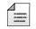
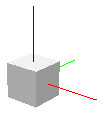

|
Scripts A script is an instance of type script, which derives from type sceneObject. A script is a scene object that wraps a detachedScript (that holds all scripting functionality). It has no role as a 3D object in a scene, but handles specific parts of a model via code. Following figure shows a script:  [Script (most of the time hidden)] Scripts come in two flavors and wrap two types of detached scripts: A double-click on a script in the scene hierarchy opens the script dialog and the script editor. Scripts can be added to the scene with [Add > Script].
Refer also to sim.scene:createObject, script-related methods and properties, the script.detachedScript property and detachedScript-related methods and properties. |